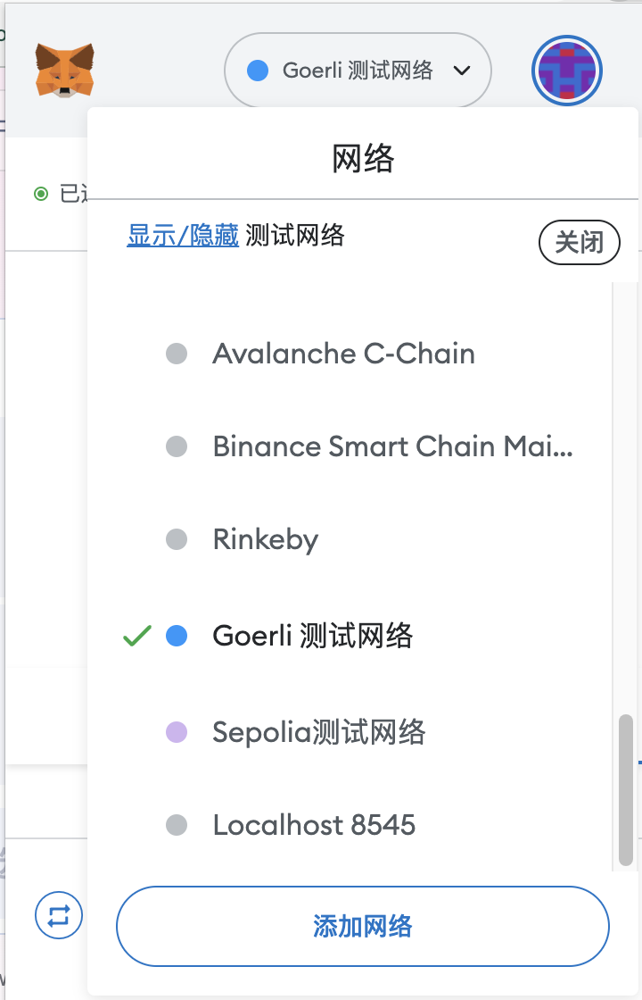
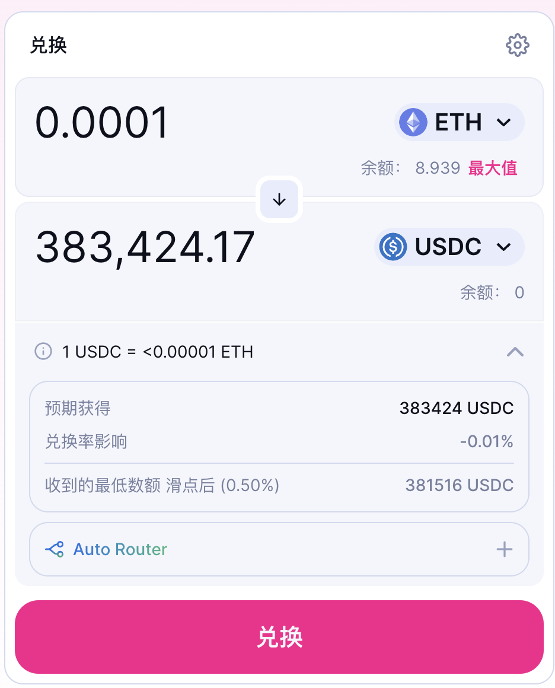
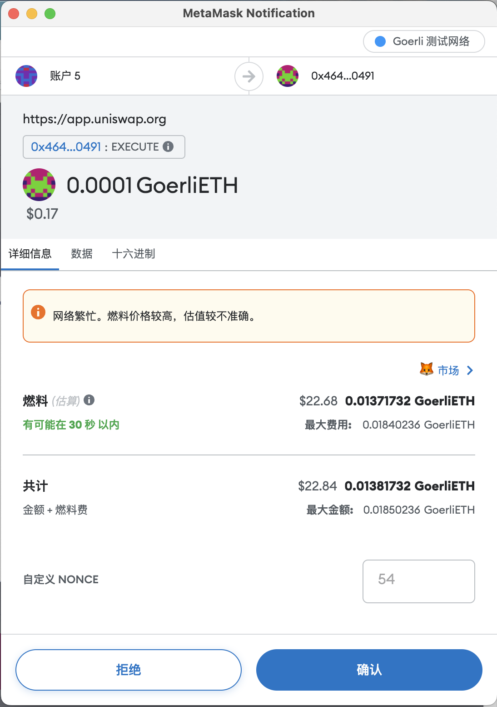
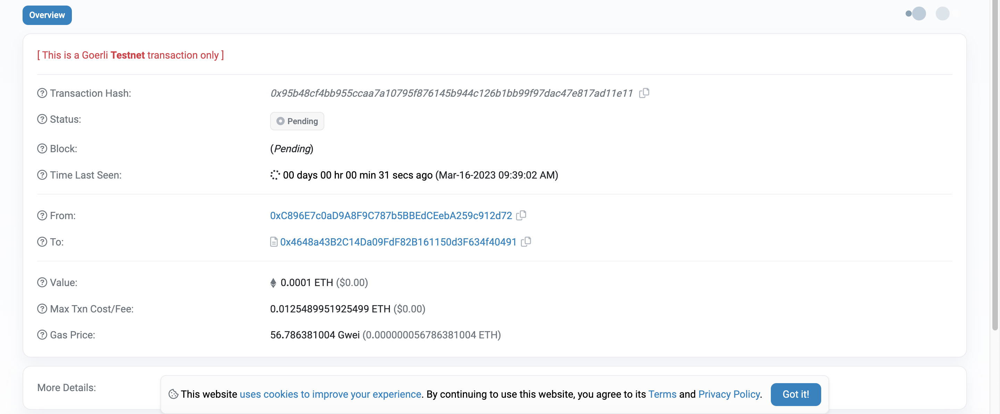

使用 Web3 的第一个 DApp
💡 自学入门
Web3不是一件容易的事，作为一个刚刚入门 Web3 的新人，梳理一下最简单直观的Web3小白入门教程。整合开源社区优质资源，为大家从入门到精通 Web3 指路。每周更新 1-3 讲。欢迎关注我的推特：@bhbtc1337
进入微信交流群请填表：表格链接
文章开源在 GitHub：Get-Started-with-Web3
目录
前言
还记得第一次使用手机应用时的惊喜和喜悜吗？每一个新应用都代表着一个新世界的打开。在Web3世界中，这些应用被称为“DApps”（去中心化应用），它们有着异曲同工的力量——能够彻底改变金融、社交和其他领域的运作方式。
今天，我们将一起探索如何使用您的第一个 Web3 DApp！对于Web3新手来说，这将是一次从“观察者”转变为“参与者”的重要转变。不需要编程技能，只需要动动手指，就能进入这个新世界的核心。
Dapp 是什么
Dapp 是 Decentralized Application 的缩写，中文翻译为去中心化应用。Dapp 是一种基于区块链的应用，它的运行不依赖于中心化的服务器，而是依赖于区块链网络。Dapp 的运行结果会被写入区块链中，所有人都可以通过区块链查询到交易的执行结果。Dapp 的应用场景广泛，可应用于：
- 去中心化金融：著名的有：Uniswap、Compound、Aave、Synthetix、MakerDAO、Yearn Finance、Curve Finance、Balancer 等
- 去中心化社交：著名的有：Damus、Lens protocol 等
- NFT：著名的有：OpenSea、Rarible、SuperRare 等
- 其他：治理，投票 著名的有：Snapshot、Gnosis 等
运行 Dapp 的流程
运行 Dapp 的流程如下：
- 开发者创建一个区块链钱包，并获得一些以太币来支付交易费用。
- 开发者编写 Dapp 的智能合约，并使用 Solidity 编程语言进行编码。
- 开发者部署智能合约到以太坊网络中，例如通过 Remix 或 Truffle 等工具。
- 开发者创建一个前端应用程序来与智能合约进行交互，例如使用 React 或 AngularJS 等工具。
- 专业用户和开发者可以通过 web3 库连接前端应用程序和以太坊网络，以便与智能合约进行交互。
- 普通用户通过前端应用程序与智能合约进行交互，例如提交交易或查询数据。
作为快速入门，本文仅介绍第 6 步，即普通用户通过前端应用程序与智能合约进行交互。第 1-5 步的内容将在后续的文章中介绍。
使用 Web3 的第一个 DApp
这里以 Uniswap 为例，介绍如何使用 Web3 的第一个 DApp。
打开 Uniswap，点击
Metamask选择Görli 测试网络。点击Connect to a wallet，选择Metamask，然后点击Connect。点击
Select a token，选择ETH，然后点击Select。点击Select a token，选择USDC，然后点击Select。 P.S. 现在Görli 测试网络上的 ETH 通过 LayerZero 跨链桥 可以兑换真 ETH，所以测试网 ETH 价格很高 hhh。输入希望交换的金额
0.0001，然后点击Swap。点击Confirm Swap，然后点击Swap。这时交易已经被提交到以太坊网络中，等待被打包。点击
View on Etherscan，然后点击View。交易成功上链，可以在 以太坊区块浏览器 中查询到交易的执行结果。

常见问题
❓ 什么是去中心化应用（DApp）和传统应用的主要区别？
DApp与传统应用的主要区别在于：
- 存储位置：DApp的代码和数据存储在分布式的区块链上，而非中心化服务器
- 控制权：没有单一实体能够关闭或控制DApp，因为它运行在去中心化网络上
- 透明性：DApp的代码和交互完全公开透明，任何人都可以查看
- 手续费：使用DApp通常需要支付小额的加密货币作为Gas费用
❓ 为什么Uniswap被称为Web3领域的重要DApp？
Uniswap被称为Web3领域的重要DApp因为：
- 它是第一个成功实现自动做市商（AMM）模式的去中心化交易所
- 没有订单簿，完全通过流动性池进行估值和交易
- 任何人都可以无需许可即添加代币和提供流动性
- 它引领了DeFi（去中心化金融）这一重要领域的发展
❓ 我可以在测试网上使用DApp测试的代币有真实价值吗？
通常测试网代币没有真实价值，因为它们就是为了测试目的被创建的。然而，文章中提到一个特殊情况，现在Görli测试网上的ETH可以通过LayerZero跨链桥兑换真实的ETH，所以这些测试网ETH确实有一定价值。但这是罕见的特殊情况，大多数测试网资产没有真实价值。
总结
今天，你在Web3旅程中迈出了重要的一步——使用了第一个去中心化应用！想象一下，你刚刚在没有任何中间商的情况下完成了一笔加密货币的交换。这不仅仅是一个简单的操作，而是对传统金融系统的一次小小革命。
期待学习和实践更多的DApp吧！在下一篇文章中，我们将介绍更多Web3领域的有用网站，帮助你深入探索这个令人兴奋的新世界。传统金融系统打造了墙与门，而区块链打破了这些障碍，让你的财务自由真正掌握在自己手中。
恭喜你，现在你可以作为用户参与到几乎所有的区块链 DApp 应用了！🎉🎉🎉